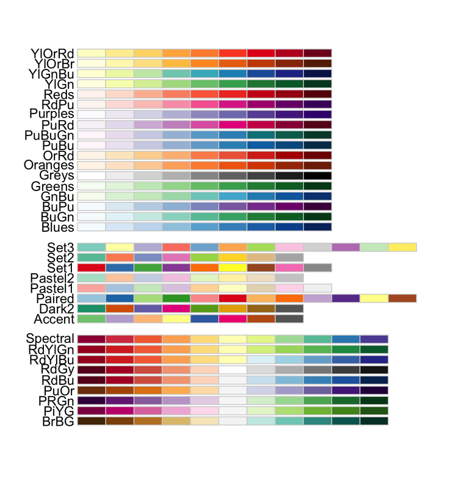
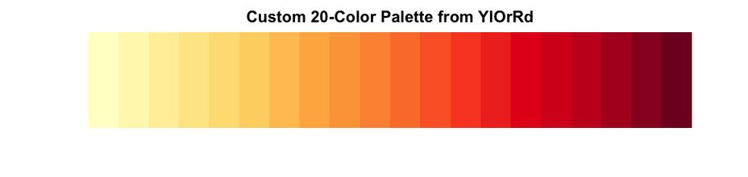

# Load the RColorBrewer package for pre-defined color palettes
library(RColorBrewer)
# Set margins for plotting (bottom, left, top, right)
par(mar = c(3, 4, 2, 2))
# Display all available color palettes from RColorBrewer
display.brewer.all()

Display the "Spectral" palette with its maximum of 11 colors
Note: Spectral is a diverging palette, useful for showing data that diverges around a midpoint
display.brewer.pal(n = 11, name = "Spectral")
Create a custom color palette with 15 colors interpolated from the 11-color Spectral palette.
colors <- colorRampPalette(brewer.pal(11, "Spectral"))(15)
# List of color with could mannally pick
> colors
[1] "#9E0142" "#C52C4B" "#E25249" "#F57647" "#FBA45C" "#FDCA78" "#FEE899" "#FFFFBF" "#EDF7A3" "#CCEA9D"
[11] "#A1D9A4" "#6FC5A4" "#48A0B2" "#3E77B5" "#5E4FA2"
Plot the generated color palette as a horizontal bar of color swatches
barplot(rep(1, length(colors)), col = colors, border = NA, space = 0,
main = "Custom 15-Color Palette from Spectral", axes = FALSE)
Create a custom color palette with 20 colors interpolated from the 9-color YlOrRd
# Interpolate a sequential palette for 20 shades
colors <- colorRampPalette(brewer.pal(9, "YlOrRd"))(20)
# Plot the generated color palette as a horizontal bar of color swatches
barplot(rep(1, length(colors)), col = colors, border = NA, space = 0,
main = "Custom 20-Color Palette from YlOrRd", axe = F)
